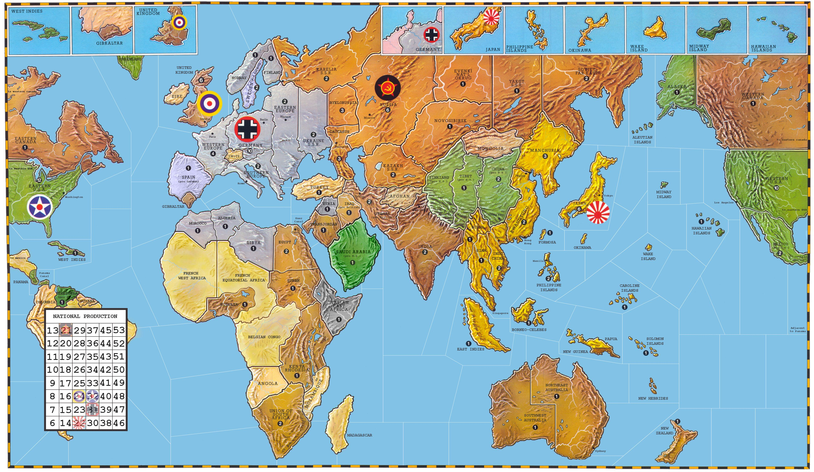

Map Calibration Tool
Click on the map to set coordinates for territories. The map uses a 2400x1200 coordinate system.
Mouse:
0, 0
Scale Factor:
1
Image Size:
0 x 0
Select Territory:
-- Click on map to set coordinates --
Export Coordinates
Clear Current
Clear All
Output: